Chủ sản phẩm duyệt một vòng giao diện và thấy màn mới đặt cạnh màn mẫu của nhóm, cùng khổ và cùng trạng thái; nhóm chưa có trong bản đồ thì chính vòng ấy tạo mục bản đồ và khuôn
Vì sao làm
Khuôn của một nhóm sinh ra cùng màn đầu tiên của nhóm (không dựng trước màn); số đo mỗi vòng giao diện là bằng chứng gửi kit cho các mục chờ KH-C1…KH-C5
Đã hứa
- AC-1 — Given bản sao kho có một commit sửa `settings/users/page.tsx` và `(auth)/login/page.tsx`, When chạy
- AC-2 — Given kế hoạch của AC-1 và đủ ảnh cho mọi cặp, When chạy `doi-chieu.mjs --dung <slug>`, Then
- AC-3 — Given lệnh `doi-chieu.mjs --mau`, When chạy trên cây thật, Then kế hoạch liệt màn mẫu của đủ bốn nhóm với đường
- AC-4 — Given bản sao kho, When một `apps/web/src/app/**/page.tsx` trả JSX nằm ngoài `nhan_dien` và ngoại lệ của mọi nhóm
- AC-5 — Given `ban-do-khuon.mjs --base <ref>` và `kiem-chuan.mjs`, When vòng chỉ thêm một màn ngoài bản đồ (không tệp nhóm
- AC-6 — Given một kho thử có bốn commit trên `<ref>` — commit 1 thêm trang Cài đặt gốc `<main>` (lệch), commit 2 sửa thành
- AC-7 — Given hồ sơ có dòng `gio-may` trong `run-log.jsonl` và sổ quyết định có dòng `seal` và dòng `gate2` có
- AC-8 — Given `docs/design/vo-va-ia.md`, skill `quy-hang-ui` và sổ `docs/design/lech-lot.md`, When một tác tử mới dựng
- AC-9 — Given hồ sơ của chính vòng này, When tới bước chấm, Then hồ sơ đã commit `khuon-so-do.json` do
Thiết kế
docs/superpowers/specs/2026-10-31-vong-giao-dien-qua-ban-do-design.md
Quyết định
- 2026-10-31 · Máy · approach · S1 — Đã tra tri thức: Chủ sản phẩm duyệt một vòng giao diện và thấy màn mới đặt cạnh màn mẫu của nhóm, cùng khổ và cùng trạng thái; nhóm chưa có trong bản đồ thì chính vòng ấy tạo mục bản đồ và khuônKho đã khai tri_thuc — bước thiết kế tra trang trước khi chọn.
- 2026-10-31 · Máy · approach · S1 — Ảnh đối chiếu do phiên design-pass chụp bằng trình duyệt trong app; lệnh của kho chỉ lập kế hoạch cặp ảnh và ghép trang, thiếu ảnh thì đỏ.Kho không có Playwright; hồ sơ 58 đã chụp mọi ảnh bằng phiên có trình duyệt (evidence/E6-*, E7-*).
- 2026-10-31 · Máy · approach · S1 — Khổ đối chiếu cố định 1440 và 375; trạng thái lấy từ mau_dang_chay.trang_thai của nhóm.Hồ sơ 58 AC-7 đã chốt hai khổ ấy cho bốn nhóm.
- 2026-10-31 · Máy · approach · S1 — Răng cho luật nhóm mới là lệch «màn ngoài bản đồ» trong chính bài quét khuôn (ban-do-khuon, kiem-chuan, --base), không phải lệnh riêng.Finding kit §7.5 nguyên tắc 5 đòi răng ở bước chấm; lệnh riêng thì kiem-chuan và chấm theo vòng không gọi.
- 2026-10-31 · Máy · approach · S1 — Răng bắt đếm bằng bài quét trên từng commit của vòng; lần bắt trước khi commit không đếm, ghi giới hạn.Đếm lúc lint bắt cần hook ghi sổ trong .claude/ — rào của kho.
- 2026-10-31 · Máy · approach · S1 — Hỏi-1: máy đăng một bình luận lên issue #308 của acceptance-gate-kit sau khi hàng này gộp (số của hàng 58, 59, 60), rồi đăng tiếp sau mỗi ba vòng giao diện.Bản phạm vi QK4 đòi báo một dòng lên #308 khi QK1 và QK2 ký — cả hai đã ký.
- 2026-10-31 · Máy · descope · S1 — bỏ design-pass — vòng không đổi màn nào; ảnh màn mẫu của bốn nhóm chụp ở bước chấm (E3).Hàng chỉ thêm công cụ ở packages/ui-lint và chữ trong docs/design, skill quy-hang-ui.
- 2026-10-31 · Máy · descope · S1 — bỏ đặc-tả-UX — hàng không dựng hay đổi màn nào.Phạm vi là lệnh kiểm và tài liệu.
- 2026-10-31 · Máy · descope · S1 — KHÔNG đưa bước chụp vào skill design-pass của kit và khối «Khuôn» trên thẻ cổng — để kit rút ở KH2, KH3.Bản phạm vi kit đặt KH2, KH3 thành mục chờ; kho dựng phần của kho.
- 2026-10-31 · Máy · approach · S1 — Khổ đối chiếu: một khổ máy tính (1440) và 375.Skill giao diện của kho buộc nhìn màn đang chạy ở hai khổ ấy; 1440 là khổ máy tính các hồ sơ trước đã chụp.
- 2026-10-31 · Máy · approach · S1 — Trạng thái đối chiếu là đúng các trạng thái khai trong mau_dang_chay.trang_thai của nhóm.Đối chiếu đòi cùng trạng thái ở hai bên; màn mẫu chỉ có ảnh ở trạng thái bản đồ khai.
- 2026-10-31 · Máy · approach · S1 — Răng «màn ngoài bản đồ» là một loại lệch trong hàm kiểm của ban-do-khuon, dùng chung ở chế độ đầy đủ, --base và kiem-chuan.Lối thoát sớm «không tệp nào của nhóm đổi» của --base nằm trong ban-do-khuon; lệnh riêng vẫn phải sửa chính chỗ đó.
- 2026-10-31 · Người · seal · gate1 —
- 2026-10-31 · Máy · fix · S3 — AC-5 đổi vế kiem-chuan: khi có màn ngoài bản đồ, kiem-chuan thoát 1 và in đúng một dòng lỗi «khuôn: <tệp>: ngoai-ban-do — …» thay vì dòng tóm tắt «… 1 lệch».kiem-chuan (hàng 4) chỉ in các dòng tóm tắt khi đạt; đỏ thì chỉ in lỗi — đổi điều ấy là đổi hành vi của mọi bước kiểm chuẩn, ngoài phạm vi hàng 60.
- 2026-10-31 · Máy · fix · S3 — Ảnh màn mẫu của hồ sơ chụp ở bước dựng và commit vào doi-chieu/; lượt chấm (E3) chỉ chụp lại vào evidence/ và so với ảnh đã commit, không chạy doi-chieu.mjs.Lượt chấm ghi vào tệp đang theo dõi của hồ sơ thì kit coi là «cây đổi trong lượt chấm» và vứt lượt ấy (mã 6).
- 2026-10-31 · Người (Manh Phan) · approach · gate1 — Hỏi-1: máy đăng lên #308 sau khi gộp, nhưng dòng đăng CHỈ mang số (mã hàng lộ trình và các số đo), không chữ sản phẩm, không tên hồ sơ, không dữ liệu người dùng — kho kit công khai.người chọn ở Cổng Phạm vi: «/acceptance-gate:approve vong-giao-dien-qua-ban-do duyệt» — nhận khuyến nghị Hỏi-1, kèm điều kiện giám sát chuyển nguyên văn: «CHỈ năm dòng số của luật kit, không chữ sản phẩm, không dữ liệu người dùng — kho kit công khai».
- 2026-10-31 · Máy · revisit · gate2 — Ngoài-1: ghi Known limitsmáy tự định tuyến theo đề xuất S4 «known-limits» — kho bật feature_loop.ngoai_n_tu_dinh_tuyen
- 2026-10-31 · Máy · revisit · gate2 — Ngoài-2: ghi Known limitsmáy tự định tuyến theo đề xuất S4 «known-limits» — kho bật feature_loop.ngoai_n_tu_dinh_tuyen
- 2026-10-31 · Máy · revisit · gate2 — Ngoài-3: ghi Known limitsmáy tự định tuyến theo đề xuất S4 «known-limits» — kho bật feature_loop.ngoai_n_tu_dinh_tuyen
- 2026-10-31 · Máy · revisit · gate2 — Ngoài-4: ghi Known limitsmáy tự định tuyến theo đề xuất S4 «known-limits» — kho bật feature_loop.ngoai_n_tu_dinh_tuyen
- 2026-10-31 · Máy · revisit · gate2 — Ngoài-5: ghi Known limitsmáy tự định tuyến theo đề xuất S4 «known-limits» — kho bật feature_loop.ngoai_n_tu_dinh_tuyen
- 2026-10-31 · Máy · revisit · gate2 — Ngoài-6: chấp nhận, không sửamáy tự định tuyến theo đề xuất S4 «wont-fix» — kho bật feature_loop.ngoai_n_tu_dinh_tuyen
- 2026-10-31 · Máy · revisit · gate2 — Ngoài-7: ghi Known limitsmáy tự định tuyến theo đề xuất S4 «known-limits» — kho bật feature_loop.ngoai_n_tu_dinh_tuyen
- 2026-10-31 · Máy · revisit · gate2 — Ngoài-8: ghi Known limitsmáy tự định tuyến theo đề xuất S4 «known-limits» — kho bật feature_loop.ngoai_n_tu_dinh_tuyen
- 2026-10-31 · Máy · revisit · gate2 — Ngoài-9: chấp nhận, không sửamáy tự định tuyến theo đề xuất S4 «wont-fix» — kho bật feature_loop.ngoai_n_tu_dinh_tuyen
Bằng chứng
Các eval
| Eval | Tiêu chí | Loại | Verdict | run_id | verified_at |
|---|---|---|---|---|---|
| E1 | AC-1 | test | PASS | minted-vong-giao-dien-qua-ban-do-E1-r1 | 2026-10-31T13:07:34Z |
| E2 | AC-2 | test | PASS | minted-vong-giao-dien-qua-ban-do-E2-r1 | 2026-10-31T13:07:34Z |
| E3a | AC-3 | test | PASS | minted-vong-giao-dien-qua-ban-do-E3a-r1 | 2026-10-31T13:07:34Z |
| E3 | AC-3 | ui-check | PASS | minted-vong-giao-dien-qua-ban-do-E3-r1 | 2026-10-31T13:07:34Z |
| E4 | AC-4 | test | PASS | minted-vong-giao-dien-qua-ban-do-E4-r1 | 2026-10-31T13:07:34Z |
| E5 | AC-5 | test | PASS | minted-vong-giao-dien-qua-ban-do-E5-r1 | 2026-10-31T13:07:34Z |
| E5b | AC-5 | script | PASS | minted-vong-giao-dien-qua-ban-do-E5b-r1 | 2026-10-31T13:07:34Z |
| E6 | AC-6 | test | PASS | minted-vong-giao-dien-qua-ban-do-E6-r1 | 2026-10-31T13:07:34Z |
| E7 | AC-7 | test | PASS | minted-vong-giao-dien-qua-ban-do-E7-r1 | 2026-10-31T13:07:34Z |
| E8 | AC-8 | judgment | PASS (ĐỀ XUẤT CỦA HỘI ĐỒNG, CHỜ NGƯỜI) | — | — |
| E9 | AC-9 | script | PASS | minted-vong-giao-dien-qua-ban-do-E9-r1 | 2026-10-31T13:07:34Z |
Chi tiết từng eval
PASS E1 · test
AC-1: Given bản sao kho có một commit sửa `settings/users/page.tsx` và `(auth)/login/page.tsx`, When chạy
npm test -w @quy-hang/ui-lint chạy xanh (duration_ms 8470.959875)
PASS E2 · test
AC-2: Given kế hoạch của AC-1 và đủ ảnh cho mọi cặp, When chạy `doi-chieu.mjs --dung <slug>`, Then
npm test -w @quy-hang/ui-lint chạy xanh (duration_ms 8470.959875)
PASS E3a · test
AC-3: Given lệnh `doi-chieu.mjs --mau`, When chạy trên cây thật, Then kế hoạch liệt màn mẫu của đủ bốn nhóm với đường
npm test -w @quy-hang/ui-lint chạy xanh (duration_ms 8470.959875)
PASS E3 · ui-check
AC-3: Given lệnh `doi-chieu.mjs --mau`, When chạy trên cây thật, Then kế hoạch liệt màn mẫu của đủ bốn nhóm với đường
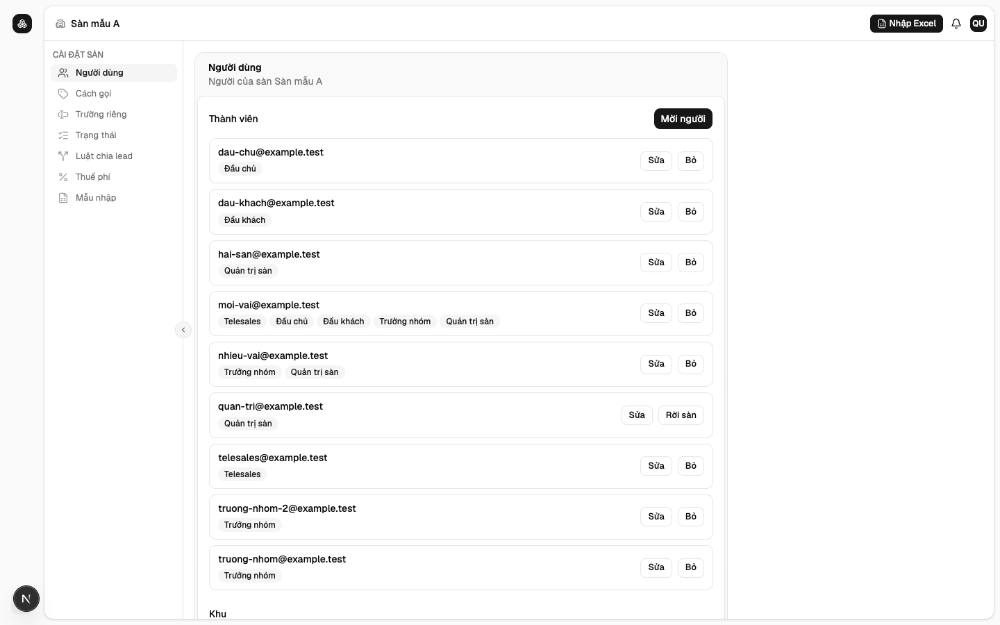

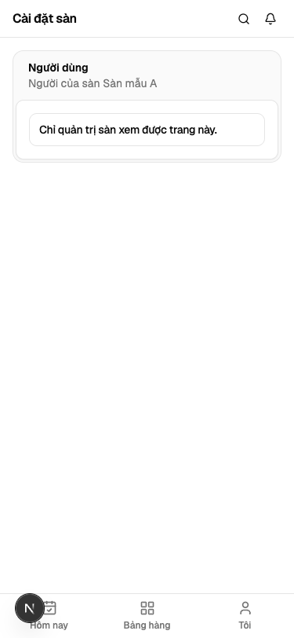
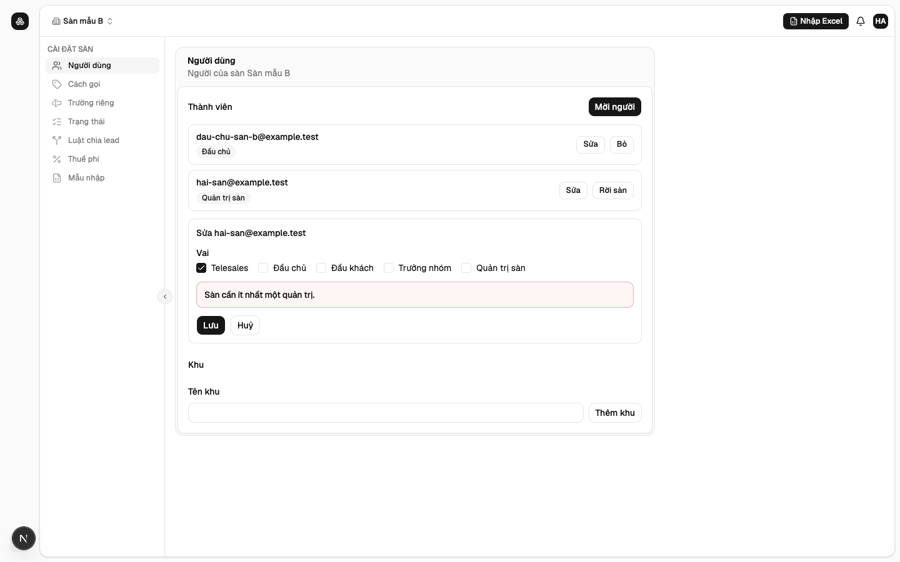
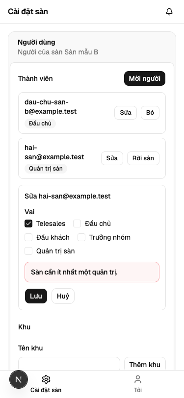
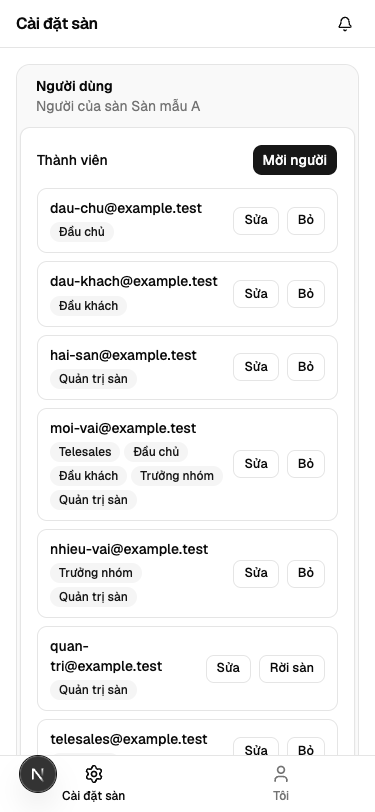
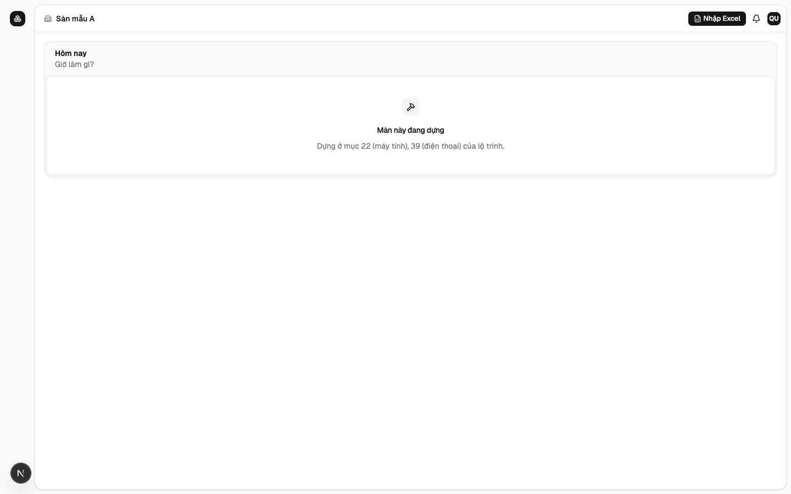
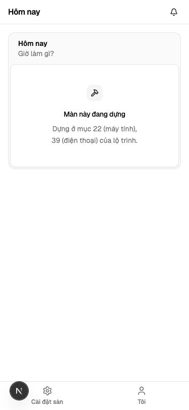
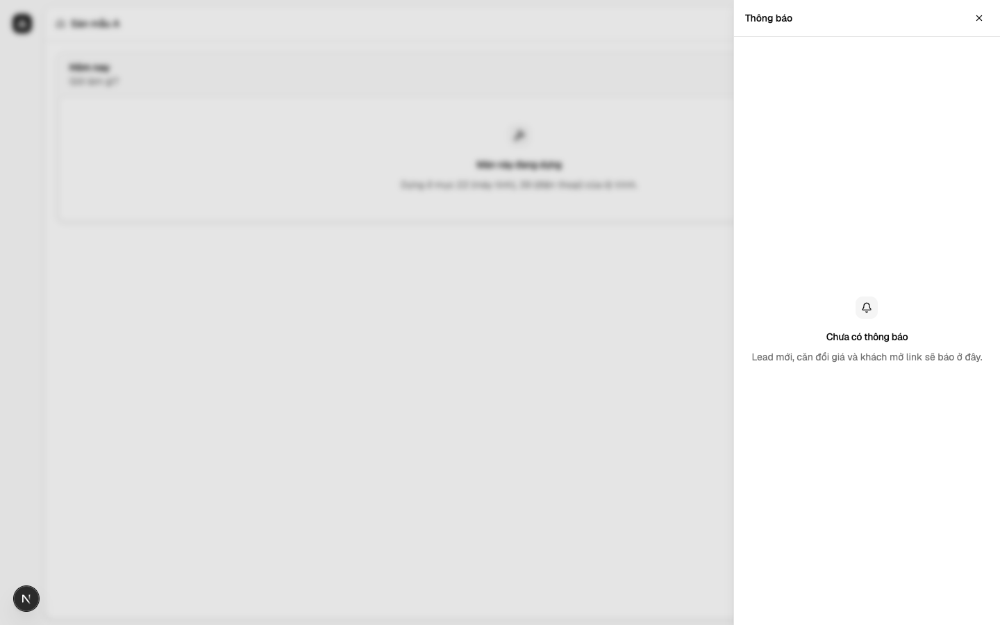
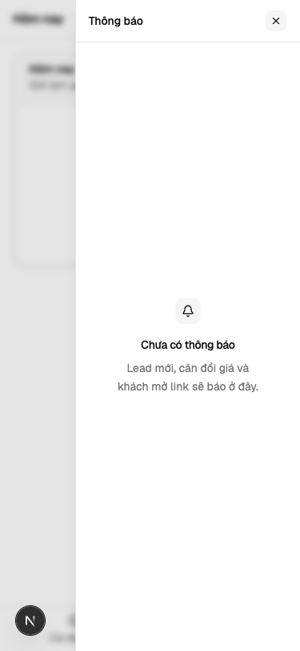
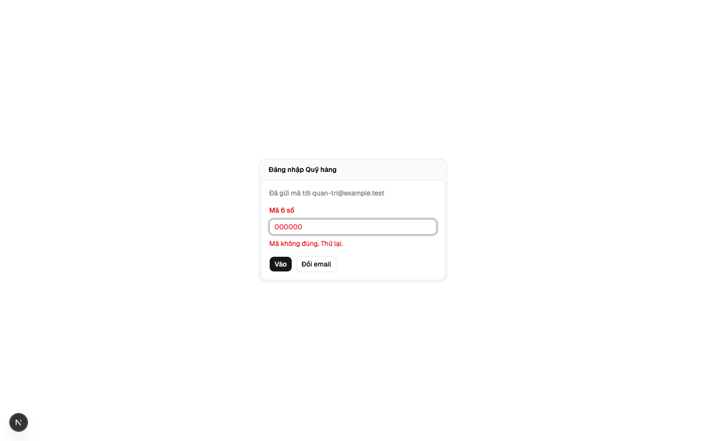
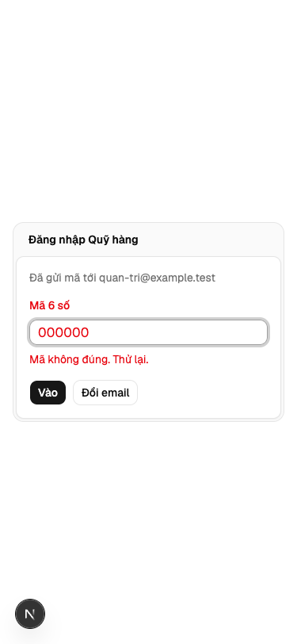

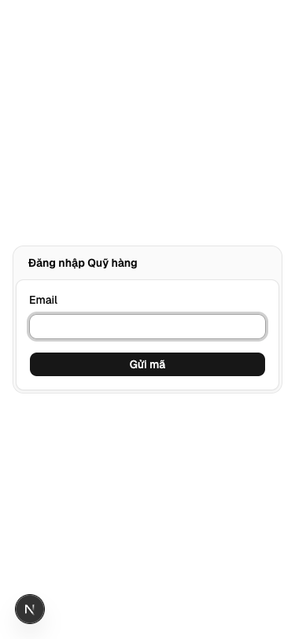
PASS E4 · test
AC-4: Given bản sao kho, When một `apps/web/src/app/**/page.tsx` trả JSX nằm ngoài `nhan_dien` và ngoại lệ của mọi nhóm
npm test -w @quy-hang/ui-lint chạy xanh (duration_ms 8470.959875)
PASS E5 · test
AC-5: Given `ban-do-khuon.mjs --base <ref>` và `kiem-chuan.mjs`, When vòng chỉ thêm một màn ngoài bản đồ (không tệp nhóm
npm test -w @quy-hang/ui-lint chạy xanh (duration_ms 8470.959875)
PASS E5b · script
AC-5: Given `ban-do-khuon.mjs --base <ref>` và `kiem-chuan.mjs`, When vòng chỉ thêm một màn ngoài bản đồ (không tệp nhóm
chuẩn giao diện: đạt
PASS E6 · test
AC-6: Given một kho thử có bốn commit trên `<ref>` — commit 1 thêm trang Cài đặt gốc `<main>` (lệch), commit 2 sửa thành
npm test -w @quy-hang/ui-lint chạy xanh (duration_ms 8470.959875)
PASS E7 · test
AC-7: Given hồ sơ có dòng `gio-may` trong `run-log.jsonl` và sổ quyết định có dòng `seal` và dòng `gate2` có
npm test -w @quy-hang/ui-lint chạy xanh (duration_ms 8470.959875)
PASS (ĐỀ XUẤT CỦA HỘI ĐỒNG, CHỜ NGƯỜI) E8 · judgment
AC-8: Given `docs/design/vo-va-ia.md`, skill `quy-hang-ui` và sổ `docs/design/lech-lot.md`, When một tác tử mới dựng
Phán đoán: Cả ba góc nhìn thấy đủ bảy ý có câu cụ thể trong bốn tệp (vo-va-ia.md, SKILL.md, lech-lot.md, trang-tam.md).
PASS E9 · script
AC-9: Given hồ sơ của chính vòng này, When tới bước chấm, Then hồ sơ đã commit `khuon-so-do.json` do
kiem-ho-so.mjs và các ca node --test chạy xanh (duration_ms 1030.447125)
Eval không phân biệt (Analyst)
Vòng verify
- Round 1: mọi eval máy xanh, E8 hội đồng đề xuất PASS chờ người; không có eval hỏng.
Tài nguyên
| Khối | Tác tử | Token đầu ra |
|---|---|---|
| S4 round 1 | 19 | 64.239 |
1 lượt chấm · tổng 64.239 token
Giới hạn và ngoài hợp đồng
- Khuôn và mục bản đồ cho nhóm chưa có màn (Bảng hàng, hồ sơ căn, Hôm nay…) — sinh cùng màn đầu tiên, từ hàng 14.
- Bước chụp trong chính skill `design-pass` và khối «Khuôn» trên thẻ cổng — việc của kit (KH2, KH3).
- Tự chụp bằng trình duyệt không đầu (Playwright) trong lệnh hay CI.
- Đường «chạy» (`data-khuon` trên phần tử gốc) cho kho không phải React.
Giao
chưa ghi quan sát production
Giá trị
- Câu hỏi phép đo trả lời: [đề xuất] đã đạt «Ảnh màn mới cạnh màn mẫu có ở Cổng Phạm vi của vòng chạm giao diện; luật «màn đầu của nhóm mới tạo mục bản đồ» nằm trong vo-va-ia.md và skill quy-hang-ui; hồ sơ vòng ghi số tệp theo khuôn, số lần răng bắt, lệch lọt» chưa? — chưa đo
- Kết quả nào là SỐNG: [đề xuất] Ảnh màn mới cạnh màn mẫu có ở Cổng Phạm vi của vòng chạm giao diện; luật «màn đầu của nhóm mới tạo mục bản đồ» nằm trong vo-va-ia.md và skill quy-hang-ui; hồ sơ vòng ghi số tệp theo khuôn, số lần răng bắt, lệch lọt — chưa đo
- Kết quả nào là CHẾT: [đề xuất] chưa đạt «Ảnh màn mới cạnh màn mẫu có ở Cổng Phạm vi của vòng chạm giao diện; luật «màn đầu của nhóm mới tạo mục bản đồ» nằm trong vo-va-ia.md và skill quy-hang-ui; hồ sơ vòng ghi số tệp theo khuôn, số lần răng bắt, lệch lọt» khi hết timebox — chưa đo
- Timebox: … — chưa đo